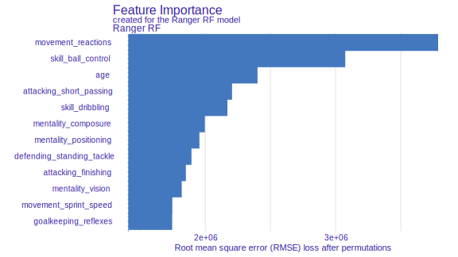
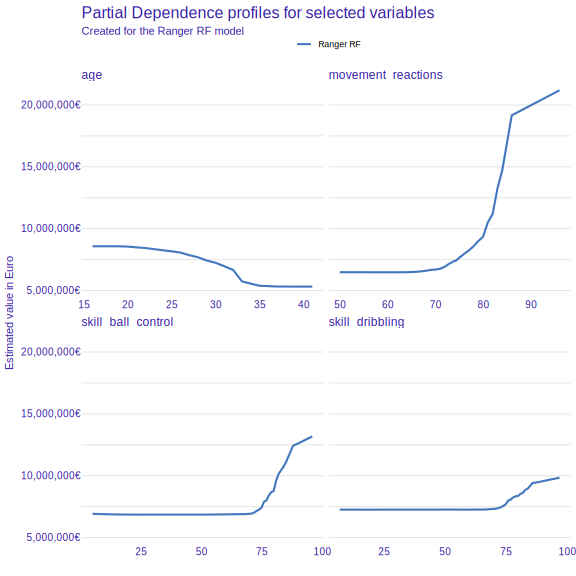
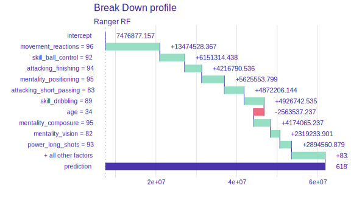
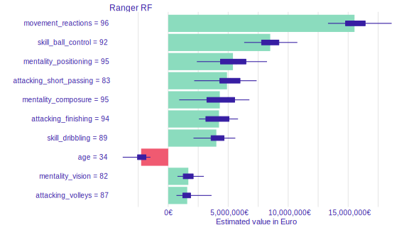
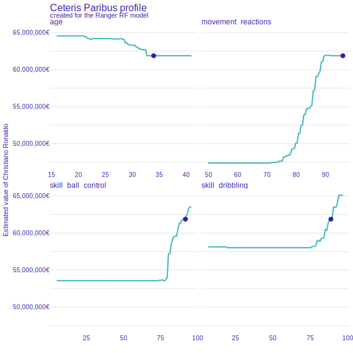

8.2 DALEX
Authors: Przemysław Biecek, Szymon Maksymiuk
8.2.1 Introduction
The DALEX package X-rays any predictive model and helps to explore, explain and visualize its behaviour. The package implements a collection of methods for Explanatory Model Analysis. It is based on a unified grammar summarised in Figure ??.
In the following sections, we will present subsequent methods available in the DALEX package based on a random forest model trained for football players worth prediction on the FIFA 20 data. We will show both methods analyzing the model at the level of a single prediction and the global level - for the whole data set.
The structure of this chapter is the following:
- In Section 8.2.2 we introduce the FIFA 20 dataset and then in section 8.2.3 we train a random regression forest using the ranger package.
- Section 8.2.4 introduces general logic beyond DALEX explainers.
- Section 8.2.5 introduces methods for dataset level model exploration.
- Section 8.2.6 introduces methods for instance-level model exploration.

Figure 8.7: Taxonomy of methods for model exploration presented in this chapter. Left part overview methods for instance level exploration while right part is related to dataset level model exploration.
8.2.2 Read data: FIFA
Examples presented in this chapter are based on data retrieved from the FIFA video game. We will use the data scrapped from the sofifa website. The raw data is available at kaggle. After some basic data cleaning, the processed data for the top 5000 football players is available in the DALEX package under the name fifa.
## value_eur age height_cm nationality attacking_crossing
## L. Messi 95500000 32 170 Argentina 88
## Cristiano Ronaldo 58500000 34 187 Portugal 84For every player, we have 42 features available.
## [1] 5000 42In the table below we overview these 42 features for three selected players.
One of the features, called value_eur, is the worth of the footballer in euros. In the next section, we will build a prediction model, which will estimate the worth of the player based on other player characteristics.
| Lionel Messi | Cristiano Ronaldo | Neymar Junior | |
|---|---|---|---|
| wage_eur | 565000 | 405000 | 290000 |
| age | 32 | 34 | 27 |
| height_cm | 170 | 187 | 175 |
| weight_kg | 72 | 83 | 68 |
| nationality | Argentina | Portugal | Brazil |
| overall | 94 | 93 | 92 |
| potential | 94 | 93 | 92 |
| value_eur | 95 500 000 | 58 500 000 | 105 500 000 |
| attacking_crossing | 88 | 84 | 87 |
| attacking_finishing | 95 | 94 | 87 |
| attacking_heading_accuracy | 70 | 89 | 62 |
| attacking_short_passing | 92 | 83 | 87 |
| attacking_volleys | 88 | 87 | 87 |
| skill_dribbling | 97 | 89 | 96 |
| skill_curve | 93 | 81 | 88 |
| skill_fk_accuracy | 94 | 76 | 87 |
| skill_long_passing | 92 | 77 | 81 |
| skill_ball_control | 96 | 92 | 95 |
| movement_acceleration | 91 | 89 | 94 |
| movement_sprint_speed | 84 | 91 | 89 |
| movement_agility | 93 | 87 | 96 |
| movement_reactions | 95 | 96 | 92 |
| movement_balance | 95 | 71 | 84 |
| power_shot_power | 86 | 95 | 80 |
| power_jumping | 68 | 95 | 61 |
| power_stamina | 75 | 85 | 81 |
| power_strength | 68 | 78 | 49 |
| power_long_shots | 94 | 93 | 84 |
| mentality_aggression | 48 | 63 | 51 |
| mentality_interceptions | 40 | 29 | 36 |
| mentality_positioning | 94 | 95 | 87 |
| mentality_vision | 94 | 82 | 90 |
| mentality_penalties | 75 | 85 | 90 |
| mentality_composure | 96 | 95 | 94 |
| defending_marking | 33 | 28 | 27 |
| defending_standing_tackle | 37 | 32 | 26 |
| defending_sliding_tackle | 26 | 24 | 29 |
| goalkeeping_diving | 6 | 7 | 9 |
| goalkeeping_handling | 11 | 11 | 9 |
| goalkeeping_kicking | 15 | 15 | 15 |
| goalkeeping_positioning | 14 | 14 | 15 |
| goalkeeping_reflexes | 8 | 11 | 11 |
In order to get a more stable model we remove four variables i.e. nationality, overall, potential, wage_eur.
8.2.3 Train a model: Ranger
The DALEX package works for any model regardless of its internal structure. Examples of how this package works are shown on a random forest model implemented in the ranger package.
We use the mlr3 package to build a predictive model.
First, let’s load the required packages.
Then we can define the regression task - prediction of the value_eur variable:
Finally, we train mlr3’s ranger learner with 250 trees. Note that in this example for brevity we do not split the data into a train/test data. The model is built on the whole data.
fifa_ranger <- lrn("regr.ranger")
fifa_ranger$param_set$values <- list(num.trees = 250)
fifa_ranger$train(fifa_task)
fifa_ranger## <LearnerRegrRanger:regr.ranger>
## * Model: ranger
## * Parameters: num.trees=250
## * Packages: ranger
## * Predict Type: response
## * Feature types: logical, integer, numeric, character, factor, ordered
## * Properties: importance, oob_error, weights8.2.4 The general workflow
Working with explanations in the DALEX package always consists of three steps schematically shown in the pipe below.
model %>%
explain_mlr3(data = ..., y = ..., label = ...) %>%
model_parts() %>%
plot()All functions in the DALEX package can work for models with any structure. It is possible because in the first step we create an adapter that allows the downstream functions to access the model in a consistent fashion. In general, such an adapter is created with
DALEX::explain()function, but for models created in themlr3package it is more convenient to use theDALEXtra::explain_mlr3().Explanations are determined by the functions
DALEX::model_parts(),DALEX::model_profile(),DALEX::predict_parts()andDALEX::predict_profile(). Each of these functions takes the model adapter as its first argument. The other arguments describe how the function works. We will present them in the following section.Explanations can be visualized with the generic function
plotor summarised with the generic functionprint(). Each explanation is a data frame with an additional class attribute. Theplotfunction creates graphs using the ggplot2 package, so they can be easily modified with usualggplot2decorators.
We show this cascade of functions based on the FIFA example.
To get started with the exploration of the model behaviour we need to create an explainer. DALEX::explain function handles is for all types of predictive models. In the DALEXtra package there generic versions for the most common ML frameworks. Among them the DALEXtra::explain_mlr3() function works for mlr3 models.
This function performs a series of internal checks so the output is a bit verbose. Turn the verbose = FALSE argument to make it less wordy.
library("DALEX")
library("DALEXtra")
ranger_exp <- explain_mlr3(fifa_ranger,
data = fifa,
y = fifa$value_eur,
label = "Ranger RF",
colorize = FALSE)## Preparation of a new explainer is initiated
## -> model label : Ranger RF
## -> data : 5000 rows 38 cols
## -> target variable : 5000 values
## -> predict function : yhat.LearnerRegr will be used ( default )
## -> predicted values : numerical, min = 457550 , mean = 7476877 , max = 89567933
## -> model_info : package mlr3 , ver. 0.8.0 , task regression ( default )
## -> residual function : difference between y and yhat ( default )
## -> residuals : numerical, min = -8250807 , mean = -3590 , max = 18161720
## A new explainer has been created!8.2.5 Dataset level exploration
The DALEX::model_parts() function calculates the importance of variables using the permutations based importance.
## variable mean_dropout_loss label
## 1 _full_model_ 1409144 Ranger RF
## 2 value_eur 1409144 Ranger RF
## 3 height_cm 1473792 Ranger RF
## 4 mentality_aggression 1474980 Ranger RF
## 5 goalkeeping_kicking 1477404 Ranger RF
## 6 weight_kg 1480144 Ranger RFResults can be visualized with generic plot(). The chart for all 38 variables would be unreadable, so with the max_vars argument, we limit the number of variables on the plot.

Once we know which variables are most important, we can use Partial Dependence Plots to show how the model, on average, changes with changes in selected variables. In this example, they show the average relation between the particular variables and players’ value.
selected_variables <- c("age", "movement_reactions",
"skill_ball_control", "skill_dribbling")
fifa_pd <- model_profile(ranger_exp,
variables = selected_variables)$agr_profiles
fifa_pd## Top profiles :
## _vname_ _label_ _x_ _yhat_ _ids_
## 1 skill_ball_control Ranger RF 5 6916332 0
## 2 skill_dribbling Ranger RF 7 7260242 0
## 3 skill_dribbling Ranger RF 11 7257083 0
## 4 skill_dribbling Ranger RF 12 7257878 0
## 5 skill_dribbling Ranger RF 13 7257148 0
## 6 skill_dribbling Ranger RF 14 7254878 0Again, the result of the explanation can be presented with the generic function plot().
library("ggplot2")
plot(fifa_pd) +
scale_y_continuous("Estimated value in Euro", labels = scales::dollar_format(suffix = "€", prefix = "")) +
ggtitle("Partial Dependence profiles for selected variables")
The general trend for most player characteristics is the same. The higher are the skills the higher is the player’s worth. With a single exception – variable Age.
8.2.6 Instance level explanation
Time to see how the model behaves for a single observation/player This can be done for any player, but this example we will use the Cristiano Ronaldo.
The function predict_parts is an instance-level version of the model_parts function introduced in the previous section. For the background behind that method see the Introduction to Break Down.
ronaldo <- fifa["Cristiano Ronaldo",]
ronaldo_bd_ranger <- predict_parts(ranger_exp,
new_observation = ronaldo)
head(ronaldo_bd_ranger)## contribution
## Ranger RF: intercept 7476877
## Ranger RF: movement_reactions = 96 13474528
## Ranger RF: skill_ball_control = 92 6151314
## Ranger RF: attacking_finishing = 94 4216791
## Ranger RF: mentality_positioning = 95 5625554
## Ranger RF: attacking_short_passing = 83 4872206The generic plot() function shows the estimated contribution of variables to the final prediction.
Cristiano is a striker, therefore characteristics that influence his worth are those related to attack, like attacking_volleys or skill_dribbling. The only variable with negative attribution is age.

Another way to inspect the local behaviour of the model is to use SHapley Additive exPlanations (SHAP). It locally shows the contribution of variables to a single observation, just like Break Down.
ronaldo_shap_ranger <- predict_parts(ranger_exp,
new_observation = ronaldo,
type = "shap")
plot(ronaldo_shap_ranger) +
scale_y_continuous("Estimated value in Euro", labels = scales::dollar_format(suffix = "€", prefix = ""))
In the previous section, we’ve introduced a global explanation - Partial Dependence Plots. Ceteris Paribus is the instance level version of that plot. It shows the response of the model for observation when we change only one variable while others stay unchanged. Blue dot stands for the original value.
selected_variables <- c("age", "movement_reactions",
"skill_ball_control", "skill_dribbling")
ronaldo_cp_ranger <- predict_profile(ranger_exp, ronaldo, variables = selected_variables)
plot(ronaldo_cp_ranger, variables = selected_variables) +
scale_y_continuous("Estimated value of Christiano Ronaldo", labels = scales::dollar_format(suffix = "€", prefix = ""))